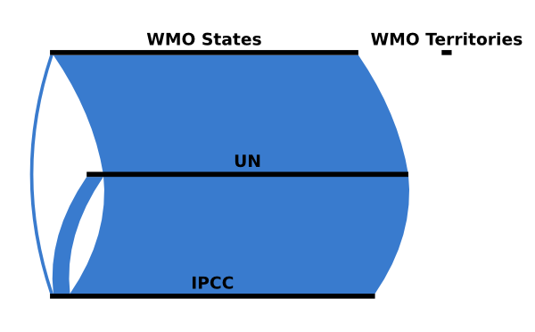

How does a country become a member of the Intergovernmental Panel on Climate Change (IPCC)?
Any state member of the United Nations (UN) or the World Meteorological Organization (WMO) becomes ipso facto a member of the Intergovernmental Panel on Climate Change (IPCC).
While all UN members are states, WMO members can be states or territories; only states are IPCC members, not territories.
Out of a total of 195 IPCC member states, only two countries, Cook Islands and Niue, are members of WMO but not UN members, and ten countries (Andorra, Equatorial Guinea, Grenada, Liechtenstein, Marshall Islands, Nauru, Palau, San Marino, St. Kitts & Nevis and St. Vincent & Grenadines) are UN members but not WMO members. The other 183 IPCC countries are all members of both WMO and UN.
As for the six WMO Territories (British Caribbean Territories, Curaçao, French Polynesia, Hong Kong SAR China, Macau SAR China and New Caledonia), since they are not states, they are not IPCC members.
You can download the data used for this visualization in CSV format or browse the whole project on GitHub.